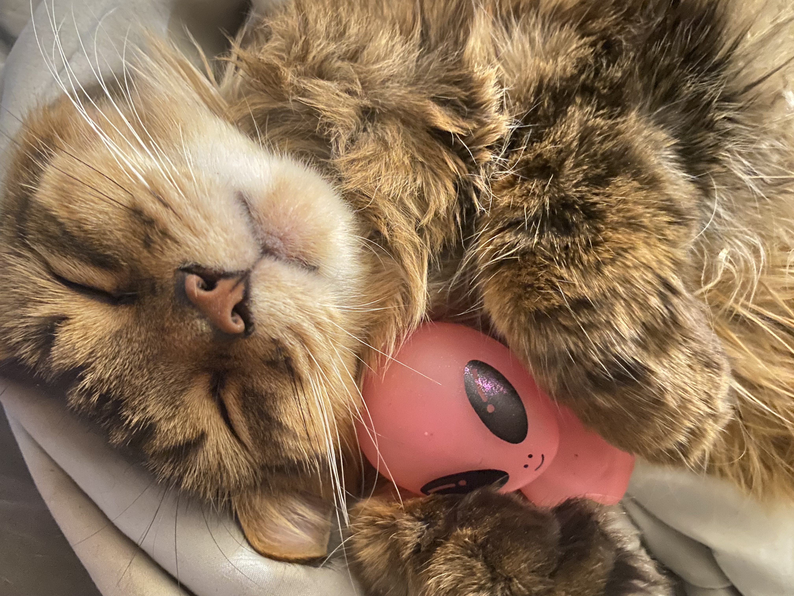

Because your pets deserve the best care.
Providing compassionate veterinary care for your family's furry, feathered, and four-legged friends since 1983.

More than veterinary care.
It's a relationship.
Since 1983, New Winchester Animal Clinic has been dedicated to providing quality care to animals and the people who love them.
Care for every kind of companion
We're here to help keep your animals happy and healthy.
Small Animal Care
Quality veterinary care for your dogs, cats, and other small companions.
Large Animal Services
Veterinary services for large animals and livestock.
Preventative Care
Help your pets stay healthy through routine veterinary care.
We're ready to welcome you and your pet.
Please call our clinic for appointment scheduling. Walk-in services are also available during designated registration hours.
Call (317) 539-6612Clinic Hours
Your pet's health is our priority.
7244 W. US Highway 36
Danville, Indiana 46122